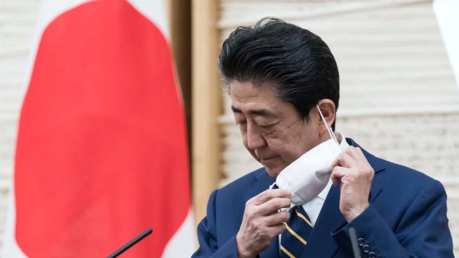

The huge cost of the coronavirus pandemic is upending Japan's seven-year experiment to rescue the economy from its debt time-bomb, as recession fears prompt calls for "helicopter money" - unlimited spending bankrolled by the central bank.
Days after Prime Minister Shinzo Abe launched a nearly $1 trillion stimulus package to battle the pandemic's financial fallout, some ruling party lawmakers are calling for even bigger spending.
Already, the government plans to boost bond issuance to a five-year high of 147 trillion yen ($1.35 trillion), or 30 per cent of the size of Japan's economy, to pay for the stimulus.
But even as global governments and central banks pull out all the stops to reduce the economic fallout, Japan is a grim reminder that a debt time-bomb may be inescapable.
Japan could issue even more debt, as economy minister Yasutoshi Nishimura has said the latest package won't be the last if growth remains in danger.
The missed opportunity to fix Japan's finances may squeeze spending for the younger generation and constrain the country's options for supporting one of the world's fastest-ageing populations.
It also marks a death knell for Premier Shinzo Abe's fiscal policy, which relied on higher tax revenue backed by strong economic growth - instead of painful spending cuts - to restore Japan's fiscal health, analysts say.
"Abenomics has kept the economy in good shape for quite a long time," said former Bank of Japan board member Takahide Kiuchi, pointing to Abe's stimulus policies, launched in late 2012 to pull the country out of deflation.
"If that time had been spent fixing Japan's finances, the government would have had more scope to boost spending without relying excessively on debt issuance," he said. "The government and the BOJ were complacent. They're responsible for this mess."
Abe was elected in 2012 with a pledge to beat deflation through Abenomics - a mix of aggressive fiscal and monetary stimulus steps with structural reforms.
The plan was to stoke the economy enough so companies reaped profits and paid more taxes. That, in turn, would let Japan reduce its huge debt burden without spending cuts.
Abenomics pushed back against a view long preached by the powerful finance ministry that without fiscal austerity, Japan couldn't fund the rising cost of an ageing population.
Growth and inflation did perk up, but the time bought by the BOJ's aggressive stimulus was not spent wisely.
Abe twice delayed a sales tax increase after the first one triggered recession, forcing the finance ministry into retreat.
As fiscal hawks lost clout, spending continued to balloon and Abe's administration pushed back the timeframe for meeting its target to balance the budget.
That was a defeat for BOJ Governor Haruhiko Kuroda, a former finance ministry bureaucrat who consistently called for government efforts to keep Japan's fiscal house in order while his central bank kept borrowing costs ultra-low.
But what was intended to be a quick fix to beat deflation turned into a long-term battle, resulting in an unprecedented policy in which the BOJ has pledged to cap long-term interest rates at zero.
The policy, dubbed yield curve control, gave lawmakers an excuse to keep spending, without having to worry about an abrupt spike in bond yields.
"Under yield curve control, the BOJ can buy unlimited amounts of bonds if yields rise," said Kazuo Momma, a former central bank executive who is now an economist at Mizuho Research Institute. "The current low-rate, low-inflation environment is a convenient one for huge government spending."
Now, Japan's economy is on the cusp of recession as the pandemic hits global and domestic demand, emboldening proponents of loose fiscal policy.
Some ruling party lawmakers are urging the government to freeze the 10 per cent sales tax or for the central bank to provide unlimited funding to the government to distribute as cash to the population.
The idea, which is gaining traction in other economies, could be particularly dangerous for Japan given its 1.13 trillion yen debt pile - double the size of its economy and the largest among industrialised nations.
Even under current ultra-low borrowing costs, debt-servicing and social welfare costs together make up 60 per cent of Japan's annual spending, compared with just 5 per cent for education.
"The ballooning welfare and debt-servicing costs are suppressing other spending," said Atsushi Takeda, chief economist at Itochu Economic Research Institute. "The government is running out of capacity to allocate resources to technological innovation, infrastructure rebuilding and talented human resources - all crucial for economic growth."
But proponents say radical ideas are necessary to help Japan weather the pandemic. Without huge spending backed by central bank money printing, Japan will see a spike in job losses and bankruptcies that could delay an economic recovery once the virus is contained, they argue.
"Crisis times like now are exactly when we need to deploy helicopter money," said Shoji Nishida, a senior ruling party official who has regular interaction with Abe. "Fiscal reform should be thrown out the window."